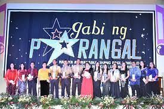
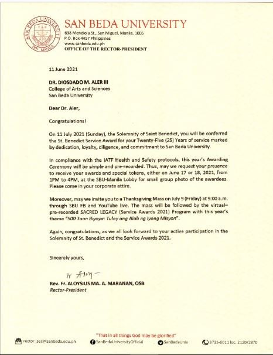

Convention – Philippine Association of Extension Program Implementers (PAEPI-Global), Bahay Kalinaw University
of the Philippines Diliman, Quezon City, February 22-23, 2016 First Place - Paper Presentation (Technology,
Engineering and Sciences Category , 3rd International and Annual

Outstanding Organization Moderator, Gabi ng Parangal San Beda College of Arts and Sciences March 2013

Featured in PCWorld Philippines Campus Edition Volume 1 Number 1 2012 in the section “People Power “in an article
entitled “Linking the Digital Divide†on page 27
Top Ten Faculty Members on Student Evaluation (ranked 9th) -- San Beda College SY 2010-2011
Teaching Excellence Award -- Far Eastern University – East Asia College, First Semester SY 2008-2009 February 21, 2009
for presenting his research paper on the topic "BAMS: Development and Implementation of Student-Athletes' Academic Performance and
Monitoring System" during the 2nd International Research Conference with the theme Reshaping the Global Landscape, held online via
Zoom on October 26-27, 2022, Southville International School and Colleges, Las Pifias City, Philippines.

Most Bibong Prof – Prof Ko ‘To Students’ Choice Award – February 12, 2004 – San Beda College Student Council
Top Ten Faculty Members on Student Evaluation (ranked 4th) -- San Beda College SY 1996-1997 – Oct 24, 1997
Awards for Twenty-five (25) Years of Service in San Beda University

PD 451 Scholar June 1985